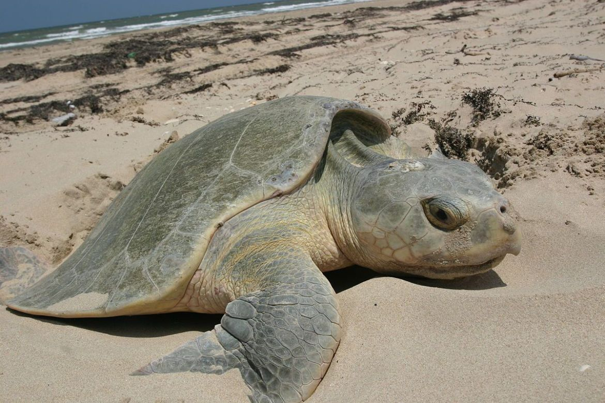

Seis espéciesde de tartarugas marinhas, do total de sete,
estão próximas de sair do risco de extinção,
segundo a Lista Vermelha da União Internacional para
a Conservação da Natureza e dos Recursos Naturais (IUCN, na sigla em inglês).
Atualmente, as espécies tartaruga-de-pente e tartaruga-de-kemp
são as que estão em maior perigo, sendo consideradas criticamente ameaçadas.
A tartaruga-verde está em risco de extinção, enquanto a tartaruga-comum,
a tartaruga-de-couro e a tartaruga-oliva
são classificadas como vulneráveis.
A única que não está listada sob ameaça é a tartaruga-marinha-australiana.
TARTARUGA-DE-PENTE

A tartaruga-de-pente ou tartaruga-de-escamas,também
conhecida pelos nomes de tartaruga-de-casco-vinho,
tartaruga-legítima e tartaruga-verdadeira, é uma tartaruga
marinha da família dos queloniídeos, encontrada em mares
tropicais e subtropicais.
TARTARUGA-DE-KEMP
A tartaruga-de-kemp ou Tartaruga-marinha-pequena é uma pequena
tartaruga marinha de cor verde-acinzentada, que pode ser
encontrada no Oceano Atlântico. A maioria dos adultos vive
no Golfo do México; os jovens variam entre áreas dos litorais
tropicais do noroeste ao sudoeste do oceano Atlântico.
TARTARUGA-VERDE
A tartaruga-verde, uruanã ou aruanã
é uma tartaruga marinha da família Cheloniidae
e seu nome científico é Chelonia mydas,
sendo o único membro do género Chelonia.
TARTARUGA-COMUM
A tartaruga-marinha-comum também chamada de tartaruga-amarela,
tartaruga-cabeçuda, tartaruga-meio-pente ou tartaruga-mestiça,
é uma espécie de tartaruga marinha pertencente à família Cheloniidae.
Habita no oceano Atlântico, Pacífico e Índico, e no Mediterrâneo.
Actualmente é a única espécie do género Caretta.
TARTARUGA-DE-COURO
A tartaruga-de-couro, tartaruga-gigante, tartaruga-de-cerro
ou tartaruga-de-quilha é a maior das espécies de tartarugas
e é muito diferente das outras tanto em aparência quanto em fisiologia.
É a única espécie extante do gênero Dermochelys e da família Dermochelyidae.
TARTARUGA-OLIVA
A tartaruga-oliva, tartaruga-olivacea ou tartaruga-marinha-olivacea
é uma das menores espécies de tartarugas marinhas, com cerca de 60 centímetros
e pesando cerca de 65 quilos.
TARTARUGA-MARINHA-AUSTRALIANA
A tartaruga-marinha-australiana é uma espécie de tartaruga marinha,
endémica da plataforma continental da Austrália.
É o único membro do género Natator.